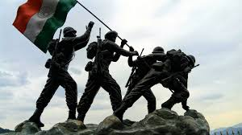

The 2019 Pulwama attack occurred on 14 February 2019, when a convoy of vehicles carrying Indian security personnel on the Jammu–Srinagar National Highway was attacked by a vehicle-borne suicide bomber at Lethapora in the Pulwama district of the erstwhile state of Jammu and Kashmir. The attack killed 40 Indian Central Reserve Police Force (CRPF)[a] personnel as well as the perpetrator—Adil Ahmad Dar—who was a local Kashmiri youth from the Pulwama district.[5][6] The responsibility for the attack was claimed by the Pakistan-based Islamist terrorist[7] group, Jaish-e-Mohammed.[8] India blamed neighbouring Pakistan for the attack, while the latter condemned the attack and denied having any connections to it.[9] The attack dealt a severe blow to India–Pakistan relations, consequently resulting in the 2019 India–Pakistan military standoff. Subsequently, Indian investigations identified 19 accused. By August 2021, the main accused along with six others had been killed, and seven had been arrested.[2] The Indian government ignored at least 11 intelligence inputs from multiple sources, including by the Indian intelligence agency Intelligence Bureau and Jammu and Kashmir Police, before the attack. Satya Pal Malik, who was the governor of the state at the time, later alleged in an interview with Karan Thapar that the Prime Minister Narendra Modi asked him to remain silent on security lapses by his administration.[10][11] In April 2023, the Home Minister of India Amit Shah rejected the allegations and said that the government has nothing to hide. He questioned the credibility of Malik's allegations and asked why he didn't raise these issues when he was the Governor of Jammu and Kashmir. Shah asked why Malik raised these issues after leaving the government
| feature | Details |
|---|---|
| Date | February 14, 2019 |
| Location |
Pulwama district, Jammu and Kashmir, India |
| Perpetrator |
Adil Ahmed Dar, a suicide bomber affiliated with Jaish-e-Mohammed (JeM) |
| Target | Convoy of Centralbr Reserve Police Force (CRPF) personnel |
| Method |
Suicide bombing by ramming an explosive-laden vehicle into a CRPF bus |
| Casualties | 40 CRPF personnel killed, many injured |
| International |
Response Widespread condemnation from the international community, including the United Nations and major world powers |
| India's Response |
Diplomatic isolation of Pakistan, increased security measures in Jammu and Kashmir, and retaliatory airstrike on a JeM training camp in Pakistan |
The attack:
The Attack: A convoy of 78 vehicles carrying over 2,500 CRPF personnel was targeted. The suicide bomber, Adil Ahmed Dar, rammed his explosive-laden vehicle into a CRPF bus. The blast was powerful enough to cause significant damage to multiple vehicles and the surrounding area. The Pulwama attack was a terrorist attack that occurred on February 14, 2019, in Pulwama district, Jammu and Kashmir, India. A convoy of vehicles carrying Indian security personnel on the Jammu–Srinagar National Highway was attacked by a vehicle-borne suicide bomber, killing 40 Central Reserve Police Force (CRPF) personnel and the attacker. The attack was claimed by the Pakistan-based Islamist terrorist group Jaish-e-Mohammed. The suicide bomber, Adil Ahmad Dar, was a local Kashmiri youth from Pulwama district. The attack led to widespread condemnation from the international community and heightened tensions between India and Pakistan. India responded with airstrikes targeting Jaish-e-Mohammed camps in Pakistan
The Perpetrator:
Adil Ahmed Dar was a young Kashmiri militant who had joined Jaish-e-Mohammed. He was reportedly radicalized and trained in Pakistan-occupied Kashmir. After the explosion in Pulwama, a team from NIA sets out to find out the masterminds behind the catastrophe. This mini block buster from ‘The Lover Boy of Bahawalpur’ by Rahul Pandita follows the team from the NIA as they start the hunt for those responsible for the Pulwama explosion.
The Aftermath:
The attack led to widespread outrage and condemnation both domestically and internationally. India imposed diplomatic sanctions on Pakistan and increased security measures in Jammu and Kashmir. India conducted airstrikes on a JeM training camp in Balakot, Pakistan, in retaliation for the attack. The Pulwama attack had far-reaching consequences:
Heightened Tensions:The attack significantly escalated tensions between India and Pakistan.Indian Airstrikes:India responded by conducting airstrikes on Jaish-e-Mohammed training camps in Pakistan.
International Condemnation: The attack was widely condemned by the international community.
Domestic Impact:The attack led to a surge in nationalist sentiment in India and impacted the 2019 general elections.
Security Measures:The Indian government implemented stricter security measures in Jammu and Kashmir.
Economic Impact:The attack had a negative impact on the tourism industry in Jammu and Kashmir. The attack remains a significant event in recent Indian history, serving as a reminder of the ongoing challenges posed by terrorism in the region.
Impact on India-Pakistan Relations:
The attack further strained the already tense India-Pakistan relations. The two countries engaged in a military standoff following the airstrikes. Diplomatic relations between the two countries deteriorated significantly.
The Pulwama attack significantly deteriorated the already strained India-Pakistan relations. Here are some of the key impacts:1. Diplomatic Tensions: Suspension of Bilateral Talks: The attack led to the suspension of high-level bilateral talks between the two countries.
2.Increased Hostility: The rhetoric between the two nations became more hostile, with both sides accusing each other of cross-border terrorism.
3. Military Escalation: Indian Airstrikes: India responded to the attack by conducting airstrikes on Jaish-e-Mohammed training camps in Pakistan. Pakistan's Retaliation: Pakistan retaliated by launching airstrikes in Indian-administered Kashmir.
4. Economic Impact: Trade Restrictions: Both countries imposed trade restrictions on each other, further damaging bilateral economic ties.
5. International Isolation: Global Condemnation: The attack led to widespread international condemnation of Pakistan's support for terrorism. Diplomatic Pressure: Pakistan faced increased diplomatic pressure from the international community to take action against terrorist groups operating from its soil.
A Video Song From Pulwama Attack:
CONCLUSION:
The Pulwama attack was a devastating event that had far-reaching consequences. It significantly escalated tensions between India and Pakistan, leading to a military standoff. The attack also highlighted the persistent threat of terrorism in the region and the need for stronger counter-terrorism measures. While the immediate aftermath saw heightened tensions and retaliatory actions, the long-term implications continue to shape the geopolitical landscape of the region. The attack serves as a stark reminder of the human cost of terrorism and the urgent need for regional peace and stability. The Pulwama attack was a suicide bombing in Pulwama, Jammu and Kashmir, India, on 14 February 2019, when a vehicle carrying explosives rammed into a convoy of the Central Reserve Police Force (CRPF). The attack killed 40 CRPF personnel and injured many more. The attack was claimed by the Pakistan-based militant group Jaish-e-Mohammed (JeM). India blamed Pakistan for the attack, while Pakistan denied any involvement. The attack led to a significant escalation of tensions between India and Pakistan. India launched airstrikes on JeM camps in Pakistan on 26 February 2019, which Pakistan retaliated with airstrikes of its own. The attack also led to a number of arrests and killings of suspected militants in Kashmir. As of August 2021, 14 of the 19 accused in the attack have been killed or arrested. The Pulwama attack remains a sensitive issue in India and Pakistan. It has had a significant impact on the relationship between the two countries, and it is likely to continue to be a source of tension for years to come.